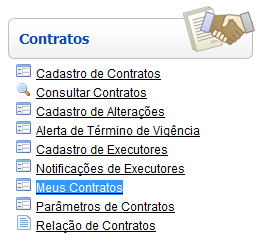
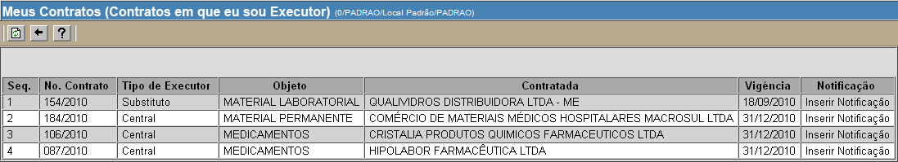
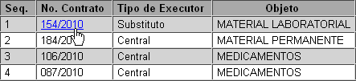
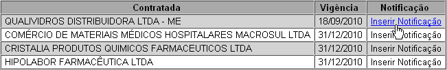

Meus Contratos [ Voltar ]Utilize este formulário para visualizar e ter acesso a todos os contratos em que o usuário é executor.O formulário "Meus contratos" encontra-se no menu "Contratos". 
Após clicar no formulário, o sistema abrirá a seguinte tela: 
A tela exibe os dados principais de todos os contratos em que o usuário é executor.


Para mais
informações sobre como registrar uma notificação, favor ver manual "Notificação
de executores".
|